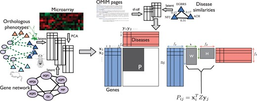
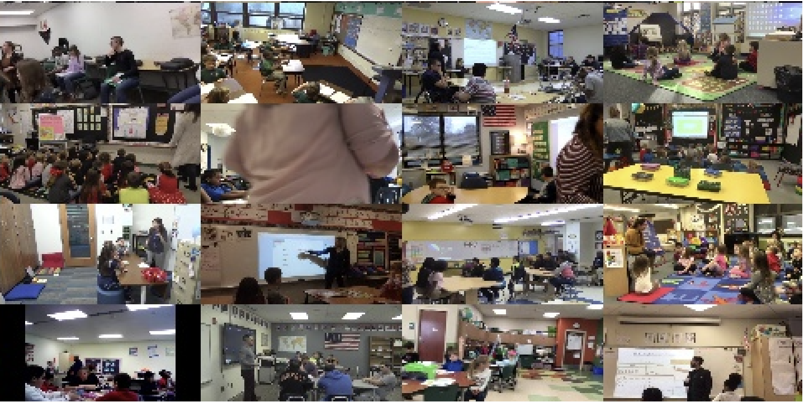
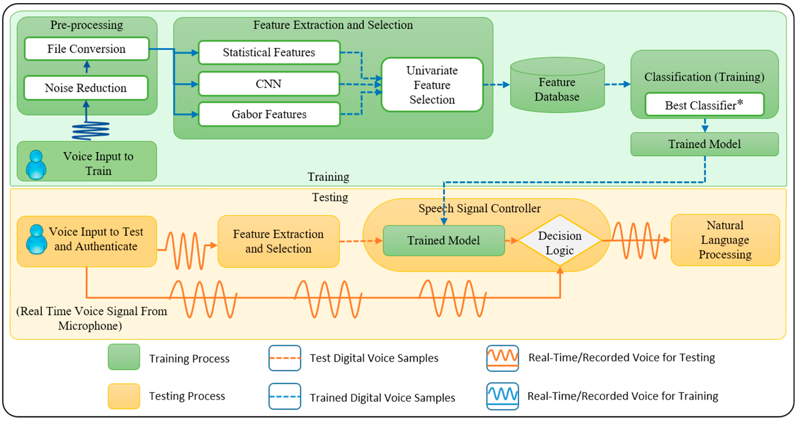
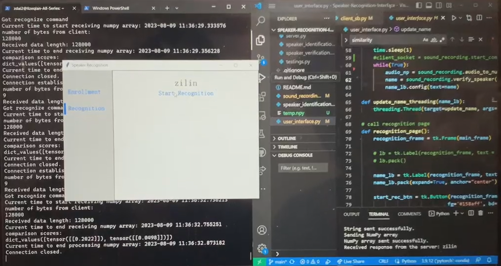

My research interest is in optimizing and implementing machine learning algorithms to facilitate research processes in different sectors.

RNN Optimization
-
Optimizing the recurrent neural network architecture through integration with diffusion probabilistic model.

Vision-based Close-loop FDM Printing for Fabricating Airtight Structures
-
Introduce an system to greatly improve print quality of FDM printer with computer vision.
[Paper]
[Video]

ALS Genetic Motor Neuron Susceptibility
-
Predicting genetic causes for motor neuron to be more vulnerable in ALS based on known disease genes and their pathways using machine learning.

Smart Laser Lithotripsy System
-
Develop and incorporate machine learning models to create a fail-safe system for the medical device.
-
Implemented data logger processor program to filter and visualize data from thermocouples.
-
[Website]

Multi-Modal Analysis of Teacher Negativity in Classroom Observation Videos
-
Proposed and implemented an automatic and semi-automatic negativity filter technique that can help teachers and learning science researchers find critical moments within classrooms, which is essential to improve teaching quality.
-
[Paper]

Speaker Recognition System
-
Implemented and modified SpeechBrain into a real-time speech activity and speaker recognition system based on PyTorch with user interface. Enabled a client-server data transfer pipeline to accelerate the speech processing speed.
-
[Video]
[Code]
Class Projects
Speaker Recognition System
[Video]
[Code]

Elderly-Care Connect Phone Software
[Video]
Activation Function Design for Fack Face Detector
[Code]

Emotion Classification Mechine Learning Model
[Code]